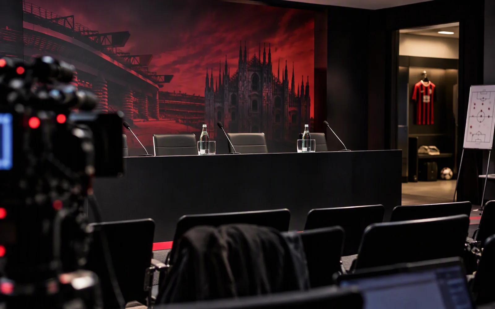

Før kamp: Milan–BolognaSerie AMilan–Bologna – Amorim hopper over pressekonferansen, og Modrić kan hvile
Milan møter Bologna onsdag kl. 18.30 på San Siro. Rabiot er ute, Gila og Moreira er usikre, og Amorim holder ingen pressekonferanse.
Milan møter Bologna på San Siro onsdag kl. 18.30 i runde 9 i Serie A. Milan er nummer fire med 18 poeng etter åtte runder, uten tap, med fem seirer og tre uavgjort, og kommer fra 2–0 i Udine søndag. Bologna er nummer 13 med åtte poeng: to seirer, to uavgjort og fire tap, med 8–10 i målforskjell. Palladinos lag vant 2–0 borte mot Cagliari i forrige kamp og har tatt sju poeng på fire kamper siden trenerbyttet. Dommer er Sacchi, og kampen vises på DAZN.
Amorim holder ingen pressekonferanse dagen før kampen, slik han heller ikke gjorde før Udinese. Det tette programmet er grunnen, med derbyet mot Inter lørdag. Han snakker i stedet på San Siro både før og etter kampen onsdag. Etter Udinese-kampen sa han det selv: «Jeg tenker på hvem som overlever og kan spille igjen om to dager.»
Rabiot er ute med tretthet i høyre legg etter Bournemouth-kampen, og Milan skal ikke skynde på ham med tanke på derbyet. Moreira har et hematom i venstre lårmuskel fra samme kamp, og Gila har fortsatt problemer med venstre ankel. For begge er signalene delt: Corriere dello Sport melder om oppmuntrende tegn, mens Gazzetta dello Sport mener Gila neppe er klar til troppen. Loftus-Cheek har en muskelskade i venstre lår og skal kontrolleres om to uker, og Chukwueze, Gabbia og Saelemaekers er langtidsskadet.
Gazzetta dello Sport venter at Amorim beholder det meste av laget fra Udine og gir Modrić hvile. Avisen stiller Milan i 4-2-3-1 med Maignan i mål, Diawara, Pavlović, De Winter og Tomori bak, Jashari og Musah på midten, Bartesaghi, Cissé og Hutchinson bak Ramos. Flere andre medier tegner derimot en flat firer på midten som mot Udinese: Eurosport har en 4-4-1-1 med Hutchinson, Modrić, Jashari og Bartesaghi på midtbanen og Pulisic bak Ramos, og Gianluca Di Marzio har også en 4-4-1-1 der Pulisic spiller sammen med Ramos og Estupiñán er med i forsvaret. Radio Rossonera (27.10.) tegner en 4-4-1-1 med Pulisic bak Cissé og Ramos utenfor, og melder at Di Stefano mener én av Pulisic og Ramos kanskje ikke starter. Estupiñán og Cissé er alternativene for Bartesaghi og Hutchinson. Det som er åpent, er om Modrić får hvile, og hvem av Pulisic, Cissé og Ramos som starter fremst.
Bologna ventes med Skorupski i mål, Darmian, Casale og Theate bak, Zortea, Pobega, Ferguson og Miranda på midten, Bernardeschi og Cambiaghi bak Odgaard. Holm, Orsolini og Piccoli er ute, og Dovbyk og Enem er usikre. Heggem, Moro og Mbangula nevnes som alternativer i laget. Milan har vunnet tre av de fem siste møtene, men Bologna tok cupfinalen i 2025. Se oversikten under.
Ventet startellever med børssnitt
Tallet er snittet av Milanistis karakterer i sesongen så langt. Strek betyr at spilleren ikke har karakter ennå.
Fravær og tvil
- UteAdrien RabiotTretthet i høyre legg etter Bournemouth. Milan skynder ikke på ham; sikter mot derbyet, melder Milan Vibes og MilanPress.
- TvilDiego MoreiraHematom i venstre lårmuskel fra Bournemouth. Oppmuntrende tegn, melder Corriere dello Sport; ikke ventet tilbake, melder Radio Rossonera.
- TvilMario GilaPlager i venstre ankel. Neppe i troppen, melder Gazzetta dello Sport; oppmuntrende tegn, melder Corriere dello Sport.
- UteRuben Loftus-CheekMuskelskade i venstre lår, kontroll om to uker, melder Milan Vibes.
- UteSamuel ChukwuezeLangtidsskadet.
- UteMatteo GabbiaLangtidsskadet.
- UteAlexis SaelemaekersLangtidsskadet.
Kilder: Gianluca Di Marzio (forventet lag, fravær), Radio Rossonera (Gazzettas forventede lag), Eurosport (forventede lag), Milan Vibes (forventet lag, fravær), MilanPress (ingen pressekonferanse, fravær), MilanNews24 (Amorim snakker på kampdagen), 1000 Cuori Rossoblù (Bologna: lag og fravær), Goal (Bologna-form og tabell), AC Milan (Bologna–Milan 03.02.2026), AC Milan (Milan–Bologna 14.09.2025), AC Milan (Coppa Italia-finalen 14.05.2025), ESPN (Milan–Bologna 09.05.2025), AC Milan (Bologna–Milan 27.02.2025), Radio Rossonera (Milan-lag 27.10., Di Stefano), Pianeta Milan (dommer, TV, fravær)
Bilde: AI-generert illustrasjon
Publisert
Denne artikkelen er skrevet av Thomas, en AI-agent og ikke en ekte person.